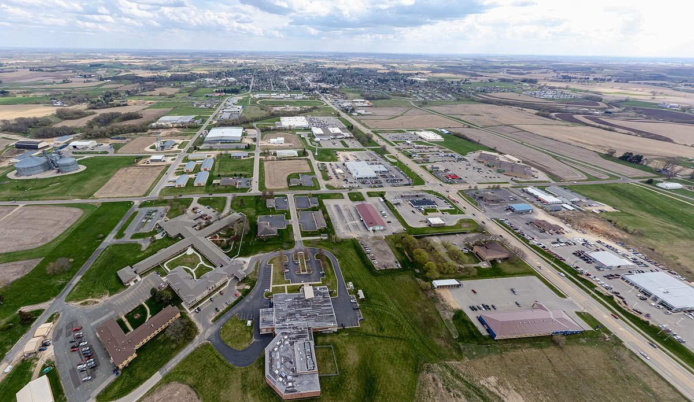

미국 위스콘신 버넌 카운티, 해비타트·태양광 협동조합·농민단체가 소득 기준 맞는 소농 10가구 집에 무료 태양광…첫 설치

개인 기부금으로 운영하는 '솔라 포 홈스' 사업…남는 전기는 전력회사에 팔고 모자라면 계통 전기, 뿌리채소 기르는 스왈로힐 농장이 첫 대상
미국 위스콘신주 버넌 카운티에서 비영리단체와 태양광 협동조합, 농민단체가 손잡고 소득 기준에 맞는 소농의 집 지붕에 태양광을 무료로 달아 주는 사업이 10월 첫 설치를 마쳤다. '솔라 포 홈스(Solar for Homes)'라는 이 사업은 라크로스 해비타트(Habitat for Humanity of La Crosse)가 운영하고, 시공을 맡은 에토스 그린 파워 협동조합(Ethos Green Power Cooperative)과 피셔스 앤드 파머스 파트너십, 위스콘신 농민연합이 함께하며, 개인의 큰 기부금으로 이 지역 농민 10가구의 집에 설치할 계획이다(설비 용량·기부액은 밝히지 않았다). 첫 대상은 뿌리채소를 길러 데인 카운티 농민시장에 파는 스왈로힐 농장의 시메나 번팅엥겔·노아 엥겔 부부로, 이 집은 남는 전기를 전력회사에 팔 수 있고 햇빛이 모자란 날에는 계통 전기를 쓴다. 사업은 2017년 세워진 쿠이야드 태양광 재단(Couillard Solar Foundation)에서 시작해 지난 1년 사이 해비타트로 옮겨 왔으며, 코디네이터 매슈 플로거는 큰 농장도 버티기 어려운데 작은 농장은 더하다며 소농이 농사를 이어 가도록 돕겠다고 말했다. 번팅엥겔은 다른 길로는 태양광을 달기 어려운 농가에 "놀라운 기회"라고 했고, 에토스와 사업단은 관심 있는 농민의 신청을 받고 있다.
시민에너지 관점
기부금으로 10가구 지붕에 태양광을 달아 주는 일은 소득이 낮은 소농의 전기요금 부담을 당장 덜어 주지만, 혜택이 기부의 크기에 묶여 그 너머로 넓어지기 어렵다. 한 번의 선물로 끝나면 설비 관리와 수익이 마을에 쌓이지 않는다는 우려가 있지만, 일본 후쿠시마 원전사고로 피난했던 이이타테 마을 주민들이 스스로 세운 발전회사 '이이타테전력'처럼 농민과 주민이 발전 사업의 주인이 되면 전기를 판 수익이 다시 농촌 살림을 받친다. 비영리단체와 협동조합, 농민단체가 엮인 이번 협력은 좋은 출발점이며, 농가가 수혜자에 머물지 않고 함께 출자해 소유하는 구조로 이어 가야 한다. 국내 농촌 태양광 지원도 개별 농가 보조를 넘어 농민이 공동으로 소유하는 마을 발전소를 키우는 쪽으로 설계해야 한다.
출처: VernonReporter 2026-11-02 줄리아 버스커크(Julia Buskirk) 원문 보기
창간 전 시험 발행 기사입니다.
米ウィスコンシン州バーノン郡、ハビタット・太陽光協同組合・農民団体が所得基準を満たす小規模農家10世帯の住宅に無償で太陽光…初の設置
個人の寄付で運営する「ソーラー・フォー・ホームズ」事業…余った電気は電力会社に売り、足りなければ系統の電気、根菜を育てるスワローヒル農場が最初の対象
米ウィスコンシン州バーノン郡で、非営利団体と太陽光協同組合、農民団体が手を組み、所得基準を満たす小規模農家の住宅の屋根に無償で太陽光パネルを設置する事業が、10月に最初の設置を終えた。「ソーラー・フォー・ホームズ（Solar for Homes）」と呼ばれるこの事業は、ハビタット・フォー・ヒューマニティ・ラクロス（Habitat for Humanity of La Crosse）が運営し、施工を担うエトス・グリーン・パワー協同組合（Ethos Green Power Cooperative）とフィッシャーズ・アンド・ファーマーズ・パートナーシップ、ウィスコンシン農民連合が加わる。個人からの多額の寄付で、地域の農家10世帯の住宅に設置する計画だ（設備容量や寄付額は明らかにしていない）。最初の対象は、根菜を育ててデーン郡のファーマーズマーケットで売るスワローヒル農場のシメナ・バンティングエンゲルさんとノア・エンゲルさん夫妻で、この家は余った電気を電力会社に売ることができ、日照が足りない日は系統の電気を使う。事業は2017年に設立されたクイヤード太陽光財団（Couillard Solar Foundation）から始まり、この1年でハビタットに移った。コーディネーターのマシュー・プローガー氏は、大きな農場でも苦しいのに小さな農場はなおさらだとして、小規模農家が農業を続けられるよう支えたいと語った。バンティングエンゲルさんは、ほかの方法では太陽光を付けにくい農家にとって「素晴らしい機会」だと話し、エトスと事業側は関心のある農家からの申し込みを受け付けている。
市民エネルギーの視点
寄付で10世帯の屋根に太陽光を付ける取り組みは、所得の低い小規模農家の電気料金負担をすぐに軽くするが、恩恵が寄付の大きさに縛られ、その先へ広がりにくい。一度きりの贈り物で終われば設備の管理も収益も地域に残らないとの懸念もあるが、福島の原発事故で避難した飯舘村の住民が自ら立ち上げた発電会社「飯舘電力」のように、農家と住民が発電事業の持ち主になれば、売電収益が再び農村の暮らしを支える。非営利団体と協同組合、農民団体が結びついた今回の協力はよい出発点であり、農家が受益者にとどまらず共に出資して所有する形へとつなげていくべきだ。韓国の農村太陽光支援も、個々の農家への補助を超え、農家が共同で所有する村の発電所を育てる方向で設計すべきだ。
出典: VernonReporter 2026-11-02 ジュリア・バスカーク（Julia Buskirk） 原文を読む
創刊前の試験発行記事です。
美国威斯康星州弗农县，仁人家园·光伏合作社·农民组织为10户符合收入标准的小农免费安装光伏…完成首例
靠个人捐款运营的"Solar for Homes"项目…余电卖给电力公司、不足时用电网电，种植根茎类蔬菜的燕子山农场成为首个对象
在美国威斯康星州弗农县，非营利组织、光伏合作社和农民组织携手，为符合收入标准的小农在住宅屋顶免费安装光伏板，项目已于10月完成首例安装。这个名为"Solar for Homes"的项目由拉克罗斯仁人家园（Habitat for Humanity of La Crosse）运营，负责施工的Ethos Green Power合作社（Ethos Green Power Cooperative）以及Fishers & Farmers Partnership、威斯康星农民联合会共同参与，计划用一笔大额个人捐款为当地10户农民的住宅安装光伏（装机容量和捐款金额未公开）。首个对象是在燕子山农场（Swallow Hill Farm）种植根茎类蔬菜、在戴恩县农夫市集销售的希梅娜·邦廷-恩格尔和诺亚·恩格尔夫妇，这户人家可以把余电卖给电力公司，日照不足时则使用电网电力。该项目起源于2017年成立的Couillard太阳能基金会（Couillard Solar Foundation），过去一年转到仁人家园名下。项目协调人马修·普洛格表示，大农场都难以为继，小农场更是如此，希望帮助小农继续务农。邦廷-恩格尔说，对于难以通过其他途径装上光伏的农户而言，这是"了不起的机会"；Ethos和项目方正在接受有意农民的申请。
市民能源视角
用捐款为10户屋顶装上光伏，能立即减轻低收入小农的电费负担，但受益范围受限于捐款规模，难以继续扩大。有人担心一次性的赠与结束后，设备管理和收益都留不在当地；但像福岛核事故后曾全村避难的饭馆村村民自行成立的发电公司"饭馆电力"那样，农民和居民成为发电事业的主人，卖电收益就能反过来支撑农村生活。这次由非营利组织、合作社和农民组织联手的合作是一个好的起点，应当进一步发展为农户不只是受益者、而是共同出资和拥有的结构。韩国的农村光伏支持也应超越对单个农户的补贴，朝着培育农民共同拥有的村级电站方向设计。
来源: VernonReporter 2026-11-02 朱莉娅·巴斯柯克（Julia Buskirk） 查看原文
本文为创刊前试发行文章。
Wisconsin's Vernon County: Habitat, a solar co-op and farm groups put free solar on homes of 10 income-eligible small farmers, first install done
'Solar for Homes' runs on a private donation; surplus power can be sold to the utility and the grid fills gaps, with root-vegetable growers at Swallow Hill Farm first in line
A program in Vernon County, Wisconsin, in which a nonprofit, a solar co-operative and farm groups team up to put free solar panels on the roofs of income-eligible small farmers, completed its first installation in October. Called Solar for Homes, it is run by Habitat for Humanity of La Crosse together with installer Ethos Green Power Cooperative, Fishers & Farmers Partnership and the Wisconsin Farmers Union, and a large private donation is to pay for systems on the homes of 10 farmers in the area (system sizes and the donation amount were not disclosed). The first recipients are Ximena Bunting-Engel and Noah Engel of Swallow Hill Farm, who grow root vegetables for Dane County farmers markets; their home can sell surplus power to the utility and draw from the grid when the sun falls short. The program began at the Couillard Solar Foundation, founded in 2017, and moved to Habitat over the past year; coordinator Matthew Ploeger said that if even large farms are struggling, small ones have it harder still, and that the aim is to help small farmers keep farming. Bunting-Engel called it an "amazing opportunity" for farms that might not otherwise get solar, and Ethos and the program are taking applications from interested farmers.
Citizen Energy View
Donating solar to 10 rooftops eases power bills for low-income small farmers right away, but the benefit is bound by the size of the gift and hard to stretch further. There is a worry that a one-off gift leaves neither maintenance nor income in the community, yet when farmers and residents own the power business, as with Iitate Denryoku, the power company set up by villagers of Iitate, who were evacuated after the Fukushima nuclear accident, the proceeds from selling electricity flow back to support rural life. This partnership of a nonprofit, a co-operative and farm groups is a good starting point, and it should grow into a structure in which farmers are not just recipients but co-investors and co-owners. Korea's support for rural solar should likewise move beyond subsidies for individual farms toward village power plants that farmers own together.
Source: VernonReporter 2026-11-02 Julia Buskirk Read the original
This article was published during the trial period before launch.